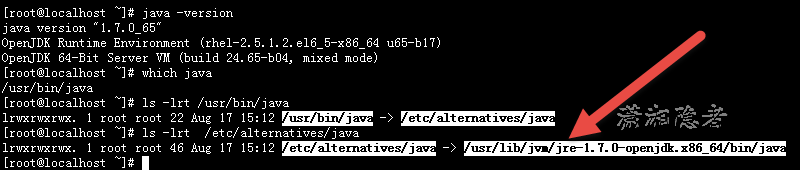
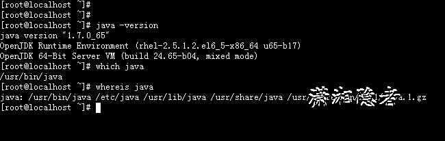
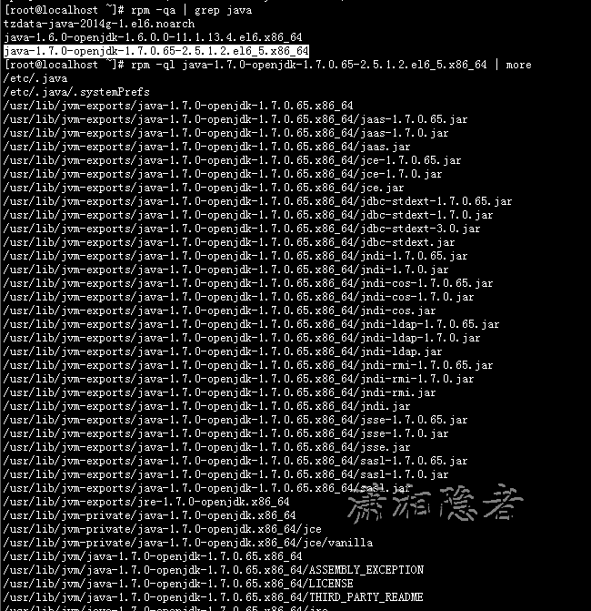

如何在一台Linux服务器上查找JDK的安装路径呢？ 有那些方法可以查找定位JDK的安装路径？是否有一些局限性呢？ 下面总结了一下如何查找JDK安装路径的方法。
1：echo $JAVA_HOME
使用$JAVA_HOME的话能定位JDK的安装路径的前提是配置了环境变量$JAVA_HOME，否则如下所示，根本定位不到JDK的安装路径
[root@localhost ~]# java -version
java version "1.7.0_65"
OpenJDK Runtime Environment (rhel-2.5.1.2.el6_5-x86_64 u65-b17)
OpenJDK 64-Bit Server VM (build 24.65-b04, mixed mode)
[root@localhost ~]# echo $JAVA_HOME
2：which java
首先要申明一下which java是定位不到安装路径的。which java定位到的是java程序的执行路径。网上的资料都是人云亦云，完全不去思考。那么怎么定位到java的安装路径呢？下面我们来看看例子吧,如下所示：
[root@localhost ~]# java -version
java version "1.7.0_65"
OpenJDK Runtime Environment (rhel-2.5.1.2.el6_5-x86_64 u65-b17)
OpenJDK 64-Bit Server VM (build 24.65-b04, mixed mode)
[root@localhost ~]# which java
/usr/bin/java
[root@localhost ~]# ls -lrt /usr/bin/java
lrwxrwxrwx. 1 root root 22 Aug 17 15:12 /usr/bin/java -> /etc/alternatives/java
[root@localhost ~]# ls -lrt /etc/alternatives/java
lrwxrwxrwx. 1 root root 46 Aug 17 15:12 /etc/alternatives/java -> /usr/lib/jvm/jre-1.7.0-openjdk.x86_64/bin/java
[root@localhost ~]#
[root@localhost ~]# cd /usr/lib/jvm
[root@localhost jvm]# ls
java-1.6.0-openjdk-1.6.0.0.x86_64 java-1.7.0-openjdk-1.7.0.65.x86_64 jre jre-1.6.0 jre-1.6.0-openjdk.x86_64 jre-1.7.0 jre-1.7.0-openjdk.x86_64 jre-openjdk
[root@localhost jvm]#

whereis java 也是如此，它本身不能定位到安装路径。可以通过上面例子去定位安装路径

3： rpm -ql packagename
如果JDK是源码安装的话，那么这个方法也是行不通的。也就是说rpm –ql packagename也是有一定局限性的。
[root@localhost ~]# java -version
java version "1.7.0_65"
OpenJDK Runtime Environment (rhel-2.5.1.2.el6_5-x86_64 u65-b17)
OpenJDK 64-Bit Server VM (build 24.65-b04, mixed mode)
[root@localhost ~]# rpm -qa | grep java
tzdata-java-2014g-1.el6.noarch
java-1.6.0-openjdk-1.6.0.0-11.1.13.4.el6.x86_64
java-1.7.0-openjdk-1.7.0.65-2.5.1.2.el6_5.x86_64
[root@localhost ~]# rpm -ql java-1.7.0-openjdk-1.7.0.65-2.5.1.2.el6_5.x86_64 | more
/etc/.java
/etc/.java/.systemPrefs
/usr/lib/jvm-exports/java-1.7.0-openjdk-1.7.0.65.x86_64
/usr/lib/jvm-exports/java-1.7.0-openjdk-1.7.0.65.x86_64/jaas-1.7.0.65.jar
/usr/lib/jvm-exports/java-1.7.0-openjdk-1.7.0.65.x86_64/jaas-1.7.0.jar
/usr/lib/jvm-exports/java-1.7.0-openjdk-1.7.0.65.x86_64/jaas.jar
/usr/lib/jvm-exports/java-1.7.0-openjdk-1.7.0.65.x86_64/jce-1.7.0.65.jar
/usr/lib/jvm-exports/java-1.7.0-openjdk-1.7.0.65.x86_64/jce-1.7.0.jar
/usr/lib/jvm-exports/java-1.7.0-openjdk-1.7.0.65.x86_64/jce.jar
/usr/lib/jvm-exports/java-1.7.0-openjdk-1.7.0.65.x86_64/jdbc-stdext-1.7.0.65.jar
/usr/lib/jvm-exports/java-1.7.0-openjdk-1.7.0.65.x86_64/jdbc-stdext-1.7.0.jar
/usr/lib/jvm-exports/java-1.7.0-openjdk-1.7.0.65.x86_64/jdbc-stdext-3.0.jar
/usr/lib/jvm-exports/java-1.7.0-openjdk-1.7.0.65.x86_64/jdbc-stdext.jar
/usr/lib/jvm-exports/java-1.7.0-openjdk-1.7.0.65.x86_64/jndi-1.7.0.65.jar
/usr/lib/jvm-exports/java-1.7.0-openjdk-1.7.0.65.x86_64/jndi-1.7.0.jar
/usr/lib/jvm-exports/java-1.7.0-openjdk-1.7.0.65.x86_64/jndi-cos-1.7.0.65.jar
/usr/lib/jvm-exports/java-1.7.0-openjdk-1.7.0.65.x86_64/jndi-cos-1.7.0.jar
/usr/lib/jvm-exports/java-1.7.0-openjdk-1.7.0.65.x86_64/jndi-cos.jar
/usr/lib/jvm-exports/java-1.7.0-openjdk-1.7.0.65.x86_64/jndi-ldap-1.7.0.65.jar
/usr/lib/jvm-exports/java-1.7.0-openjdk-1.7.0.65.x86_64/jndi-ldap-1.7.0.jar
/usr/lib/jvm-exports/java-1.7.0-openjdk-1.7.0.65.x86_64/jndi-ldap.jar
/usr/lib/jvm-exports/java-1.7.0-openjdk-1.7.0.65.x86_64/jndi-rmi-1.7.0.65.jar
/usr/lib/jvm-exports/java-1.7.0-openjdk-1.7.0.65.x86_64/jndi-rmi-1.7.0.jar
/usr/lib/jvm-exports/java-1.7.0-openjdk-1.7.0.65.x86_64/jndi-rmi.jar
/usr/lib/jvm-exports/java-1.7.0-openjdk-1.7.0.65.x86_64/jndi.jar
/usr/lib/jvm-exports/java-1.7.0-openjdk-1.7.0.65.x86_64/jsse-1.7.0.65.jar
/usr/lib/jvm-exports/java-1.7.0-openjdk-1.7.0.65.x86_64/jsse-1.7.0.jar
/usr/lib/jvm-exports/java-1.7.0-openjdk-1.7.0.65.x86_64/jsse.jar
/usr/lib/jvm-exports/java-1.7.0-openjdk-1.7.0.65.x86_64/sasl-1.7.0.65.jar
/usr/lib/jvm-exports/java-1.7.0-openjdk-1.7.0.65.x86_64/sasl-1.7.0.jar
/usr/lib/jvm-exports/java-1.7.0-openjdk-1.7.0.65.x86_64/sasl.jar
/usr/lib/jvm-exports/jre-1.7.0-openjdk.x86_64
/usr/lib/jvm-private/java-1.7.0-openjdk.x86_64
/usr/lib/jvm-private/java-1.7.0-openjdk.x86_64/jce
/usr/lib/jvm-private/java-1.7.0-openjdk.x86_64/jce/vanilla
/usr/lib/jvm/java-1.7.0-openjdk-1.7.0.65.x86_64
/usr/lib/jvm/java-1.7.0-openjdk-1.7.0.65.x86_64/ASSEMBLY_EXCEPTION
/usr/lib/jvm/java-1.7.0-openjdk-1.7.0.65.x86_64/LICENSE
/usr/lib/jvm/java-1.7.0-openjdk-1.7.0.65.x86_64/THIRD_PARTY_README
/usr/lib/jvm/java-1.7.0-openjdk-1.7.0.65.x86_64/jre
/usr/lib/jvm/java-1.7.0-openjdk-1.7.0.65.x86_64/jre/bin
/usr/lib/jvm/java-1.7.0-openjdk-1.7.0.65.x86_64/jre/bin/java
/usr/lib/jvm/java-1.7.0-openjdk-1.7.0.65.x86_64/jre/bin/keytool
/usr/lib/jvm/java-1.7.0-openjdk-1.7.0.65.x86_64/jre/bin/orbd
/usr/lib/jvm/java-1.7.0-openjdk-1.7.0.65.x86_64/jre/bin/pack200
/usr/lib/jvm/java-1.7.0-openjdk-1.7.0.65.x86_64/jre/bin/policytool
/usr/lib/jvm/java-1.7.0-openjdk-1.7.0.65.x86_64/jre/bin/rmid
/usr/lib/jvm/java-1.7.0-openjdk-1.7.0.65.x86_64/jre/bin/rmiregistry
--More--

CentOS 搭建JDK环境 http://www.linuxidc.com/Linux/2015-06/118879.htm
Ubuntu 14.04安装JDK1.8.0_25与配置环境变量 http://www.linuxidc.com/Linux/2015-01/112030.htm
Ubuntu 14.04 LTS安装Oracle JDK 1.8 http://www.linuxidc.com/Linux/2014-11/109216.htm
CentOS6.3安装JDK和环境配置 http://www.linuxidc.com/Linux/2012-09/70780.htm
Ubuntu 14.04 安装 JDK8 http://www.linuxidc.com/Linux/2014-09/106218.htm
Ubuntu下安装JDK图文解析 http://www.linuxidc.com/Linux/2014-09/107291.htm
本文永久更新链接地址：http://www.linuxidc.com/Linux/2015-08/122353.htm